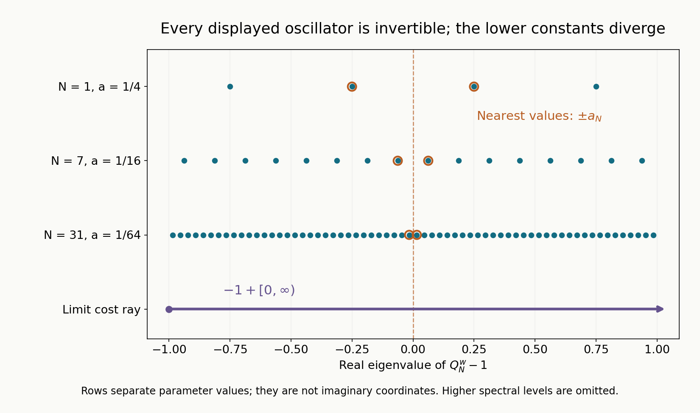

Shrinking oscillators and uniform quadratic bounds
Pointwise invertibility does not by itself give a uniform estimate for a family. Oscillator frequencies can shrink toward zero, while high occupation numbers compensate for that shrinkage. Their limiting contribution becomes continuous. A useful uniform criterion must see both the surviving discrete frequencies and the entire continuous quadratic cost.
We use the real semidefinite symplectic normal form in Quadratic energy and the positive trace, the complex polynomial spectrum in The spectrum of a complex quadratic polynomial, and the full generalized-zero criterion in Quadratic coercivity when some directions have zero energy. Parameter inverses and slowly quantized quadratics supplies weighted inverse bounds and the operator-valued Weyl estimate needed below. Finite matrix decomposition, constant-numerator contour moments and contour continuity are in Sections 3–7 of Polynomial and contour interfaces for stable boundary models. Only circles avoiding the spectrum are used; their numerator is one.
Basic references are Sjöstrand [S], Nonnenmacher [N], Lerner [L] and Hörmander [H]. The uniform criterion is Hörmander's. Our proof separates the geometry of a simultaneous position–momentum blow-up from the analytic problem of quantizing its fiber inverses. Neither eigenvalue simplicity nor diagonalizability is assumed.
We use \(D=-i\partial\), \(\omega((x,\xi),(y,\eta))=\xi\cdot y-x\cdot\eta\), and \(Q(u,v)=u^THv\) for \(Q(z)=z^THz\). Thus \(Q(\overline v,v)\) conjugates the vector, not the form.
1. The uniform criterion
Fix \(n\) and a finite \(\gamma\geq0\). Let \(\mathcal M\) be any set of pairs \((Q,\kappa)\), where \(Q\) is a complex homogeneous quadratic form on \(\mathbb R^{2n}\) and \[ \operatorname{Re}Q\geq0,\qquad |\operatorname{Im}Q|\leq\gamma\operatorname{Re}Q. \tag{1.1} \] Assume \(\kappa\) and the eigenvalues of the Hamilton map of \(\operatorname{Re}Q\) are uniformly bounded on this set. A uniform coordinate coefficient bound is not required.
Let \(F_Q\) satisfy \(\omega(u,F_Qv)=Q(u,v)\). Its nonzero positive frequencies \(\mu_1,\ldots,\mu_k\) are the eigenvalues of \(F_Q/i\) with positive real part, counted algebraically. They lie in \(\Gamma_\gamma=\{z:\operatorname{Re}z\geq0,\ |\operatorname{Im}z|\leq\gamma\operatorname{Re}z\}\). The number \(k\) can vary. For \(\epsilon>0\), set \[ V_\epsilon(Q)= \bigoplus_{|\lambda|<\epsilon} \ker(F_Q-\lambda I)^{2n}. \tag{1.2} \] This includes full Jordan spaces for zero and for small nonzero eigenvalues.
Theorem 1.1. The following are equivalent:
- There is \(C<\infty\) such that \[ \|u\|_0\leq C\|(Q^w+\kappa)u\|_0, \quad u\in\mathcal S(\mathbb R^n),\quad (Q,\kappa)\in\mathcal M. \tag{1.3} \]
- There are \(\epsilon,\delta>0\) such that, for every member of the family, every \(v\in V_\epsilon(Q)\), and every \(\alpha\in\mathbb N^k\), \[ \left|\kappa+Q(\overline v,v) +\sum_{j=1}^k(2\alpha_j+1)\mu_j\right|\geq\delta. \tag{1.4} \]
Here \(\mathbb N\) includes zero. Empty sums and empty families have their usual vacuous meaning. Both assertions are unchanged by a real linear symplectic coordinate change for each member separately: Weyl covariance is unitary, Hamilton matrices become similar, and a real coordinate map commutes with conjugation in the polarized cost.
We first prove the compactness mechanism underlying this equivalence.
2. Normalize the real energy, then keep both shrinking coordinates
Consider any sequence in the family. Pass to a subsequence with fixed numbers \(k,\ell,f\) of real oscillator, multiplication and free physical directions. The sector condition makes \(\operatorname{Im}Q\) vanish on the radical of \(\operatorname{Re}Q\), by the kernel argument in the zero-direction lesson. The real symplectic normal form therefore gives \[ \operatorname{Re}Q_\nu =\sum_{j=1}^k b_{j,\nu}(x_j^2+\xi_j^2)+|t|^2, \qquad b_{j,\nu}>0. \tag{2.1} \] The \(t\) variables have conjugate frequencies \(\tau\), absent from the entire complex form. Both coordinates of each of the \(f\) remaining directions are absent. Fixing a normalized Schwartz function in those free variables, and conversely using Fubini, shows that they affect neither the lower constant nor the criterion. We suppress them, so \(n=k+\ell\) in the following calculation.
The real Hamilton spectrum bounds all the \(b_{j,\nu}\). Choose a subsequence on which they converge, and reorder them so that \(m\) limits are positive and \(d=k-m\) are zero. Write \(z=(x_s,\xi_s)\in\mathbb R^{2m}\) for the surviving variables and \((y,\eta)\in\mathbb R^{2d}\) for the fading ones. Put \(e_{j,\nu}=\sqrt{b_{m+j,\nu}}\), so each \(e_{j,\nu}>0\) tends to zero. There is a quadratic form \(q_\nu\) such that \[ Q_\nu(z,y,\eta,t)=q_\nu(z,e_\nu y,e_\nu\eta,t). \tag{2.2} \] Set \(p=(Y,\Xi,t)\). Uniformly on the subsequence, \[ a(|z|^2+|p|^2)\leq\operatorname{Re}q_\nu(z,p) \leq A(|z|^2+|p|^2) \tag{2.3} \] for fixed \(a,A>0\). Indeed the fading and multiplication coefficients in these variables are one, and the surviving coefficients have positive bounded limits.
The sector inequality bounds the imaginary coefficients too. To see this without a matrix norm assumption, evaluate the imaginary quadratic form on each coordinate vector and on the sum and difference of each pair; polarization bounds every entry by a constant depending on \(A,\gamma\) and dimension. Pass to a further subsequence: \[ q_\nu\longrightarrow q,\qquad \kappa_\nu\longrightarrow\kappa \tag{2.4} \] coefficientwise. The limit satisfies (2.3), is sector valued, and has \[ q(z,p)=z^TGz+2z^TBp+p^TDp,\quad \operatorname{Re}G>0,\quad \operatorname{Re}B=0,\quad \operatorname{Re}D>0. \tag{2.5} \] The unrescaled forms converge to \[ Q_0(z,y,\eta,t)=q(z,0,0,t). \tag{2.6} \] Its nonzero Hamilton spectrum consists of the \(m\) positive frequencies \(\mu_1,\ldots,\mu_m\) of \(z^TGz\) and their negatives. The other eigenvalues are zero. Matrix decomposition and determinant continuity let us label the positive frequencies of \(Q_\nu\) so that the first \(m\) tend to these frequencies and the remaining \(d\) tend to zero, with all algebraic multiplicities retained.
3. The small Hamilton space has a rescaled critical graph
Choose a fixed small circle about zero avoiding the nonzero spectrum of \(F_{Q_0}\), and let \(N_\nu\) be the sum of the generalized spaces of \(F_{Q_\nu}\) inside that circle. It contains precisely the eigenvalues tending to zero for large \(\nu\).
The projection \[ \Pi_\nu=\frac1{2\pi i}\int_{\text{circle}} (\zeta I-F_{Q_\nu})^{-1}\,d\zeta \tag{3.1} \] converges in matrix norm to \(\Pi_0\). These assertions are the selected finite matrix contour facts: primary decomposition expands each resolvent into finitely many nilpotent pole terms, and the constant contour moment keeps just the identity on the enclosed generalized spaces. Matrix inverse continuity is uniform on the compact circle. Hence the ranks, which are integer traces of projections, are eventually equal. This does not discard higher pole orders or infer a general holomorphic functional calculus.
The generalized zero space of \(Q_0\), from the zero-direction theorem, is a graph over \((y,\eta,t,\tau)\). Projection onto those coordinates is consequently invertible on \(N_\nu\) for large \(\nu\). Since every pure \(\tau\) vector is in the kernel of \(F_{Q_\nu}\), this graph is \[ z=H_\nu(y,\eta,t), \tag{3.2} \] independent of \(\tau\). The maps \(H_\nu\) are complex linear.
Lemma 3.1. Define \[ \widetilde H_\nu(Y,\Xi,t)= H_\nu(Y/e_\nu,\Xi/e_\nu,t). \] Then, in the space of linear maps, \[ \widetilde H_\nu\longrightarrow h,\qquad h(p)=-G^{-1}Bp. \tag{3.3} \] The graph \(z=h(p)\) is exactly the condition that \(q(z,p)\) be critical in the surviving variables. Equivalently its polarization against every vector supported in \(z\) is zero.
Proof. Use two different symplectic dilations, not the simultaneous rescaling as a claimed symplectic transformation. First the coordinate change \[ (y,\eta)=(Y/e_\nu,e_\nu\zeta) \] turns \(Q_\nu\) into \[ q_\nu(z,Y,e_\nu^2\zeta,t)\longrightarrow q(z,Y,0,t). \tag{3.4} \] Hamilton similarity preserves which eigenvalues lie inside the fixed circle. The corresponding small space has graph \(z=H_\nu(Y/e_\nu,e_\nu\zeta,t)\). Its limiting generalized zero graph is \[ z=-G^{-1}(B_Y Y+B_t t), \] by the degenerate quadratic theorem. Convergence of the contour projections and inversion of the coordinate projection prove convergence of these graph coefficients. Setting \(\zeta=0\) gives the limits of the \(Y/e_\nu\) coefficients.
The opposite dilation \((y,\eta)=(e_\nu v,\Xi/e_\nu)\) gives the limit \(q(z,0,\Xi,t)\). Its small graph tends to \(-G^{-1}(B_\Xi\Xi+B_t t)\). If desired a real Fourier rotation exchanges this multiplication frequency \(\Xi\) with a physical coordinate before applying the zero-direction theorem; the surviving \(z\) projection is unchanged. Setting \(v=0\) gives the limits of the \(\Xi/e_\nu\) coefficients. The original unscaled contour limit gives \(H_\nu(0,0,t)\to-G^{-1}B_t t\).
Linearity now combines the three independent coefficient limits: \[ H_\nu(Y/e_\nu,\Xi/e_\nu,t) =H_\nu(Y/e_\nu,0,0) +H_\nu(0,\Xi/e_\nu,0)+H_\nu(0,0,t). \] Their sum is (3.3). Finally \(Gz+Bp=0\) is precisely the surviving critical equation, and \(G\) is invertible. ∎
There is also an invariant Hamilton description. Extend \(q\) to the full phase variables \((z,Y,\Xi,t,\tau)\), independent of \(\tau\), and let \(F_q,F_0\) be its and \(Q_0\)'s Hamilton maps. Then \[ z=h(p)\quad\Longleftrightarrow\quad F_0F_q(z,p,\tau)=0. \tag{3.5} \] Indeed the \(t\) component of \(F_qv\) is zero. On vectors with that component zero, the surviving component of \(F_0w\) is its invertible \(z\) Hamilton block applied to \(w_z\); its remaining possibly nonzero component also vanishes when \(w_z=0\). The component \((F_qv)_z\) is the invertible symplectic matrix on \(z\) applied to \(Gz+Bp\). This proves (3.5), including the empty surviving block.
4. Polarized cost cones and the spectral limit
Put \[ S=D-B^TG^{-1}B,\qquad c(p)=p^TSp. \tag{4.1} \] The real part of \(S\) is positive definite: write \(B=iC\) with \(C\) real and use \(\operatorname{Re}G^{-1}=G^{-*}(\operatorname{Re}G)G^{-1}>0\). On the critical graph, \[ q(\overline{(h(p),p)},(h(p),p))=p^*Sp. \tag{4.2} \] The zero-direction lesson proves that the range of (4.2) for complex \(p\) equals the range of \(c(p)\) for real \(p\). Denote this closed cone by \(\mathcal C\).
Lemma 4.1. The ranges \[ \mathcal C_\nu= \{Q_\nu(\overline v,v):v\in N_\nu\} \tag{4.3} \] converge locally to \(\mathcal C\). More explicitly, every bounded sequence of values from \(\mathcal C_\nu\) has limit points in \(\mathcal C\), and every value of \(\mathcal C\) is the limit of values from \(\mathcal C_\nu\). Each \(\mathcal C_\nu\) is a closed convex cone.
Proof. Parametrize \(N_\nu\) by \[ v=(\widetilde H_\nu(p),Y/e_\nu,\Xi/e_\nu,t,\tau). \] The free \(\tau\) coordinate has no cost. If \(A_\nu\) is the symmetric matrix of \(q_\nu\), and \(T_\nu p=(\widetilde H_\nu(p),p)\), the cost is \[ p^*K_\nu p,\qquad K_\nu=T_\nu^*A_\nu T_\nu. \tag{4.4} \] Here \(K_\nu\) need not be symmetric. Its Hermitian real part \(R_\nu=(K_\nu+K_\nu^*)/2\) is at least \(aI\), by (2.3). Its Hermitian imaginary part is \(I_\nu=(K_\nu-K_\nu^*)/(2i)\). Normalize \(R_\nu\) to the identity and unitarily diagonalize the Hermitian matrix \(R_\nu^{-1/2}I_\nu R_\nu^{-1/2}\). In those coordinates the range is \[ \left\{\sum_j(1+i\theta_{j,\nu})|w_j|^2:w\in\mathbb C^{2d+\ell}\right\}. \tag{4.5} \] It is the closed convex cone of finitely many rays. Closedness follows because a bounded real part bounds the sum of their nonnegative coefficients.
Equations (2.4) and (3.3) give \(K_\nu\to S\). A bounded value in (4.4) has \(|p|^2\leq a^{-1}\operatorname{Re}(p^*K_\nu p)\), so a subsequence of its representing vectors converges. Passing to the limit gives a value \(p^*Sp\). Conversely keep any representing \(p\) fixed and pass to the limit in (4.4). This proves both local convergence assertions. Real \(p\) realizes every limiting value by (4.2); real representatives are not asserted for every prelimit \(K_\nu\). ∎
Every nonnegative multiple of a fading positive frequency belongs to \(\mathcal C_\nu\). To verify this, choose an eigenvector \(v\in N_\nu\) with \(F_{Q_\nu}v=i\mu v\), \(\operatorname{Re}\mu>0\). Set \(b(v)=-i\omega(v,\overline v)\). The Hamilton flow calculation from the complex spectrum lesson gives \[ \operatorname{Re}\mu\,b(v)= \operatorname{Re}Q_\nu(\overline v,v)>0,\qquad Q_\nu(\overline v,v)=\mu b(v). \tag{4.6} \] Strict positivity here follows from the sector kernel identity: if the real energy of an eigenvector were zero, it would be in the kernel of the full quadratic matrix and hence have zero Hamilton eigenvalue. Scaling \(v\) proves the claim. Cone convexity then allows sums of such multiples to be absorbed into one cost value.
Define the limiting set \[ \mathcal Z= \left\{\kappa+\sum_{j=1}^m(2\alpha_j+1)\mu_j+c: \alpha\in\mathbb N^m,\ c\in\mathcal C\right\}. \tag{4.7} \] It is closed. In a bounded part of this set, all summands apart from \(\kappa\) have nonnegative real part, and the surviving frequencies have strictly positive real parts. Thus the occupation indices are bounded; only finitely many closed translated cones occur.
The corresponding sets with all frequencies of \(Q_\nu\) and costs from \(N_\nu\) converge locally to (4.7). For recovery, keep surviving indices fixed, set fading indices to zero, and use Lemma 4.1; the fading ground frequencies tend to zero. For the opposite inclusion, bounded total values bound the surviving occupation indices and the real parts of all costs. Absorb every fading frequency contribution into \(\mathcal C_\nu\) using (4.6). The sector inequality bounds its imaginary part too. Lemma 4.1 now supplies a limiting cost. This proves the asserted local limit without imposing a bound on fading occupation numbers.
5. The spectral limit is exactly the uniform analytic condition
Proposition 5.1. For the normalized convergent sequence (2.2)–(2.4), a common lower norm bound holds on a tail of the sequence if and only if \(0\notin\mathcal Z\).
Proof of necessity. Make the unitary physical dilation \(Y=e_\nu y\). It turns \(Q_\nu^w+\kappa_\nu\) into \[ \mathcal P_\nu =q_\nu^w(x_s,D_{x_s},Y,h_\nu D_Y,t)+\kappa_\nu, \qquad h_{j,\nu}=e_{j,\nu}^2. \tag{5.1} \] For any fixed real \(\Xi_0\), unitary multiplication by \(\exp(i\sum_jY_j\Xi_{0j}/h_{j,\nu})\) replaces \(h_\nu D_Y\) by \(h_\nu D_Y+\Xi_0\). On each fixed Schwartz function the resulting quadratic differential expression converges strongly in \(L^2\) to \[ q^w(x_s,D_{x_s},Y,\Xi_0,t)+\kappa. \tag{5.2} \] This is a finite coefficient calculation: every term with a \(Y\) derivative has a vanishing factor \(h_{j,\nu}\), including its Weyl ordering constant; all other polynomial coefficients converge. Schwartz weighted derivatives control every term.
A common lower bound passes to (5.2). Concentrate normalized compact profiles in the multiplication variables \(Y,t\), around any prescribed \((Y_0,t_0)\). No derivative falls on these profiles. Coefficient continuity then gives the same lower constant for every elliptic fiber \[ q^w(x_s,D_{x_s},p)+\kappa,\qquad p\in\mathbb R^{2d+\ell}. \tag{5.3} \] The complex polynomial spectrum says that its possible zero eigenvalues are exactly \[ \kappa+c(p)+\sum_{j=1}^m(2\alpha_j+1)\mu_j. \tag{5.4} \] A zero value has a Schwartz nullvector, contradicting the lower bound. Every \(c\in\mathcal C\) has a real representative \(p\). Thus \(0\notin\mathcal Z\). With no surviving variables the fibers are scalars, and the same concentration argument applies.
Proof of sufficiency. If \(0\notin\mathcal Z\), every fiber (5.3) is invertible, with its exact maximal domain \(\mathcal B_2\), by the complex polynomial spectrum. Its leading real energy in \((z,p)\) is uniformly positive by (2.3). The parameter-inverse theorem therefore applies. It includes the coefficient perturbations \(q_\nu,\kappa_\nu\), uniformly for all real \(p\). Its slow-quantization proposition, with the separate scales \(h_{j,\nu}\to0\), gives a common lower bound for (5.1) on a tail. Undo the unitary dilation. This proves the proposition. ∎
This is the reason for retaining both \(Y\) and \(\Xi\) in the blow-up. Strong convergence with no modulation would inspect only the slice \(\Xi=0\), while the criterion requires all real phase parameters.
6. Proof of the full uniform theorem
Suppose (1.3) holds but no common \(\epsilon,\delta\) work in (1.4). For each positive integer \(\nu\), choose a member, indices and a vector from \(V_{1/\nu}(Q_\nu)\) for which the modulus in (1.4) is less than \(1/\nu\). Perform the normalization and subsequence construction of Sections 2–4. The subspace \(V_{1/\nu}(Q_\nu)\) is contained in \(N_\nu\) for large \(\nu\), since the surviving eigenvalues stay away from zero. The local spectral-limit argument of Section 4 then shows \(0\in\mathcal Z\): real parts bound the surviving indices; fading occupations and the chosen cost are absorbed into \(\mathcal C_\nu\). But the uniform operator bound passes through every unitary normalization, and Proposition 5.1 excludes \(0\) from \(\mathcal Z\). This contradiction proves necessity of (1.4).
Conversely assume (1.4), and suppose no common lower constant exists. Select a sequence of members whose best lower constants tend to infinity; equivalently there are normalized Schwartz functions with image norms tending to zero. Normalize the forms and extract (2.4). All the eigenvalues represented by \(N_\nu\) have modulus less than the fixed \(\epsilon\) for large \(\nu\), so \(N_\nu\subset V_\epsilon(Q_\nu)\).
Keep any surviving occupation indices fixed and put all fading indices equal to zero. Every \(c\in\mathcal C\) has recovery costs in \(\mathcal C_\nu\). Applying (1.4) and taking limits gives \[ \left|\kappa+\sum_{j=1}^m(2\alpha_j+1)\mu_j+c\right| \geq\delta,\qquad c\in\mathcal C. \tag{6.1} \] In particular \(0\notin\mathcal Z\). Proposition 5.1 supplies a common lower bound on this subsequence, contradicting the chosen image norms. This proves sufficiency and Theorem 1.1. ∎
The same theorem applies to any fixed closed convex sector of opening less than \(\pi\). Choose a unit complex factor \(e^{-i\theta}\) which puts that sector inside \(\Gamma_\gamma\), and apply the theorem to \(e^{-i\theta}Q,e^{-i\theta}\kappa\). The real Hamilton bound is imposed on \(\operatorname{Re}(e^{-i\theta}Q)\). The selected frequencies and all polarized costs acquire the same unit factor; Hamilton eigenvalue moduli, the spaces \(V_\epsilon\), the gap moduli and the lower norm constants are unchanged. This supplies the rotated-sector variant with its precise real-energy hypothesis.
7. Compact families of constant quadratic rank
Corollary 7.1. Let \(\mathcal M\) be compact in the coefficients \((Q,\kappa)\), satisfy the same sector condition, and have constant complex rank of its quadratic matrices. A common lower norm bound holds if and only if every member satisfies the pointwise criterion \[ \kappa+Q(\overline v,v) +\sum_j(2\alpha_j+1)\mu_j\ne0, \qquad v\in V_0(Q),\quad\alpha\in\mathbb N^k. \tag{7.1} \]
Proof. Necessity is the fixed-form theorem. For sufficiency, compactness bounds the real Hamilton spectra and \(\kappa\), so Theorem 1.1 applies. We show that failure of its uniform gap would contradict (7.1).
Take such a failing sequence with cutoffs and gaps tending to zero, and pass to a coefficient limit \(Q_\nu\to Q\), \(\kappa_\nu\to\kappa\), inside the compact family. Fix a circle separating the zero eigenvalue of \(F_Q\) from its nonzero spectrum. Its small spaces \(N_\nu\) converge to \(V_0(Q)\). Choose convergent orthonormal frames for these spaces: apply the convergent projections to a basis of \(V_0(Q)\), then use Gram–Schmidt; its denominators stay positive near the limit.
In these frames the matrices of the polarized costs have Hermitian real parts \(R_\nu\geq0\). Their kernel is exactly the full quadratic radical. Indeed zero real polarized energy means \(Rv=0\); the sector inequality implies that the imaginary matrix kills the same vector. Conversely the quadratic radical lies in the generalized zero space. The complex kernel of the full quadratic matrix equals the complexification of the real kernel of its real part, by the same argument applied to \(v^*Hv\). Thus constant complex quadratic rank gives constant radical dimension.
Since \(\dim N_\nu=\dim V_0(Q)\) is fixed, these restricted real matrices have constant rank. Their positive eigenvalues consequently stay uniformly away from zero on the orthogonal complement of their kernels. The imaginary matrices kill the kernels too. Removing a representing vector's kernel component changes no cost. On the complementary spaces a bounded cost has a bounded representing vector. Matrix convergence gives both local inclusion and recovery for the cost cones, exactly as in Lemma 4.1, now without an anisotropic rescaling.
All positive frequencies tending to zero have their nonnegative multiples in these cones, by (4.6). They can therefore be absorbed into the cost. Surviving occupation indices remain bounded whenever the total value is bounded. A failure of a common gap now passes to a zero value in (7.1) for the limiting member, a contradiction. Hence a uniform \(\epsilon,\delta\) exist, and Theorem 1.1 gives the common estimate. ∎
Constant rank is used to control the cost cones, not to assume a constant number of nonzero Hamilton frequencies.
Proposition 7.2. Fix a sector-valued pair \((Q,\kappa)\) satisfying (7.1). All sufficiently small coefficient perturbations \((Q',\kappa')\) in the same sector, with the same complex quadratic rank, satisfy one common lower norm estimate.
Proof. If no such neighborhood and constant existed, one could choose pairs tending to \((Q,\kappa)\) and normalized Schwartz tests with image norms tending to zero. Take the small spectral spaces inside one fixed circle about zero. The constant-rank cone argument in Corollary 7.1 proves that their polarized costs converge locally to the cost cone on \(V_0(Q)\). Absorb every fading frequency contribution into the prelimit cost cone. Bounded total values bound the surviving occupation indices. Thus the full spectral sets with these small-space costs converge locally to the closed set in (7.1), which excludes zero. All sufficiently late pairs consequently satisfy (1.4) with this fixed circle radius and a common positive gap: otherwise a sequence of total values tending to zero would contradict that local limit. Theorem 1.1 gives a common lower bound on this tail, contradicting the tests. ∎
In particular the assertion applies when both the quadratic rank and the generalized-zero dimension are preserved. No smallness assertion without a rank qualification follows from this proof.
8. Examples and exercises with complete solutions
Exercise 1 — individual inverses can diverge, 8 points. For positive integers \(N\), set \(a_N=1/(2N+2)\) and \(Q_N=a_N(x^2+\xi^2)\). Show that each \(Q_N^w-1\) is invertible, but their lower constants diverge. Compare with \(Q_N^w+i/3\).
Solution. The eigenvalues of the first operator are \(a_N(2j+1)-1\). Equality to zero would require the odd integer \(2j+1\) to equal \(2N+2\), which is impossible. The two nearest eigenvalues have modulus \(1/(2N+2)\); a normalized corresponding eigenfunction forces the lower constant to be at least \(2N+2\). The spectrum theorem gives each individual inverse. For the second family, the real quadratic operator is selfadjoint and \(\|(Q_N^w+i/3)u\|^2=\|Q_N^wu\|^2+\|u\|^2/9\) on Schwartz space, so constant three works. The limiting cost cone is \([0,\infty)\): the shift \(-1\) meets its negative, while \(i/3\) does not.

Figure 1. Exercise 1, with \(N=1,7,31\). Each row displays all exact eigenvalues \(a_N(2j+1)-1\) between \(-1\) and \(1\); vertical row positions only separate the parameters. Orange circles mark the nearest values \(\pm a_N\). No displayed operator has a zero eigenvalue. The bottom ray is the limiting set \(-1+[0,\infty)\), of which only the indicated interval is shown; its arrow continues to the right. The mechanism is proved in Lemma 4.1 and Proposition 5.1, and the uniform criterion is Theorem 1.1. See Sjöstrand [S] for the oscillator spectrum and Hörmander [H] for the uniform-family criterion. Reproducible figure source.
Exercise 2 — the invariant real-spectral bound, 6 points. Consider \(Q_R=R^2x^2+R^{-2}\xi^2\), with \(R\geq1\). Are its coordinate coefficients bounded? Are its real Hamilton frequencies bounded? Give a common lower constant for \(Q_R^w+1\).
Solution. The coefficient \(R^2\) is unbounded. The positive Hamilton frequency is \(\sqrt{R^2R^{-2}}=1\), and the opposite frequency has the same modulus. The symplectic change \(X=Rx\), \(\Xi=R^{-1}\xi\) is implemented unitarily and turns the operator into \(X^2+D_X^2+1\). Its lowest eigenvalue is two, giving constant \(1/2\). This family lies within the theorem even though a uniform coordinate coefficient assumption would exclude it.
Exercise 3 — a critical graph with complex coupling, 10 points. Let \[ q=(x^2+\xi^2)+(Y^2+\Xi^2)+i xY, \] independent of any further conjugate variables. Compute \(h(Y,\Xi)\), the critical value, and the polarized cost cone.
Solution. In the surviving variables \(z=(x,\xi)\), \(G=I\) and the cross matrix has entry \(i/2\) between \(x\) and \(Y\). Thus \(h=(-iY/2,0)\). Substitution gives \(c(Y,\Xi)=5Y^2/4+\Xi^2\). The polarized graph value is \(5|Y|^2/4+|\Xi|^2\), with range \([0,\infty)\), exactly the range of the real critical values. The form is sector valued: \(|xY|\leq(x^2+Y^2)/2\leq\operatorname{Re}q/2\). The complex center changes the coefficient of \(Y^2\) even though the cone remains real.
Exercise 4 — a fading phase parameter, 8 points. In (5.1), explain how to test a prescribed \(\Xi_0\ne0\) when \(h_\nu\to0\). Why is strong convergence with no modulation insufficient?
Solution. Multiply a fixed Schwartz test by \(\exp(i\sum_jY_j\Xi_{0j}/h_{j,\nu})\). This is unitary for each \(\nu\) and changes \(h_\nu D_Y\) to \(h_\nu D_Y+\Xi_0\). After undoing that modulation, the fixed-profile operator converges to the fiber expression with this \(\Xi_0\). Concentration in \(Y,t\) then inspects every real parameter \(p\). An unmodulated profile gives only \(\Xi_0=0\), which does not test the full critical-value cone.
Exercise 5 — rank and Hamilton frequencies are different, 10 points. For \(0\leq\epsilon\leq1/2\), put \[ Q_\epsilon=(x_1+\epsilon x_2)^2+ (\xi_2+\epsilon\xi_1)^2. \] Find its quadratic rank and positive Hamilton frequency for \(\epsilon>0\). Explain why Corollary 7.1 can still apply at \(\epsilon=0\).
Solution. The two independent linear forms give a real quadratic matrix of rank two for every \(\epsilon\), including zero. Their symplectic pairing has modulus \(2\epsilon\); equivalently a direct Hamilton matrix calculation gives its nonzero eigenvalues \(\pm2i\epsilon\). There is one positive frequency \(2\epsilon\) when \(\epsilon>0\), and none at zero. The quadratic rank stays constant although this Hamilton frequency disappears. For the shift \(\kappa=1\), every frequency and polarized cost is nonnegative real, so (7.1) holds at every parameter, and the corollary gives a common lower constant. Direct quadratic positivity even gives constant one. Constant rank cannot be replaced in the proof by an assertion that the nonzero Hamilton frequency count is fixed.
References
- [S] Johannes Sjöstrand, Parametrices for pseudodifferential operators with multiple characteristics, Arkiv för Matematik 12 (1974), 85–130. Original paper. Positive complex planes and elliptic quadratic spectra.
- [N] Stéphane Nonnenmacher, An Introduction to Semiclassical Analysis, lectures, September–November 2020. Open university-hosted notes. Semiclassical Weyl products, boundedness and parametrices.
- [L] Nicolas Lerner, Metrics on the Phase Space, chapter 2 of Metrics on the Phase Space and Non-Selfadjoint Pseudo-Differential Operators. Author-hosted chapter.
- [H] Lars Hörmander, The Analysis of Linear Partial Differential Operators III: Pseudo-Differential Operators, Springer, 2007 reprint. Publisher's bibliographic record. Quadratic-family criteria underlying regularity with one derivative lost.
Written by GPT-6.1 Sol (OpenAI), at Ultra reasoning effort, September 2026. Self-checked by the writing AI. Public domain (CC0).
Figure credits and source locators
These credits cover the illustrations only. They do not change the lesson’s proof status.
- shrinking-oscillator-levels — GPT-6.1 Sol (OpenAI), Ultra reasoning effort, September 2026; CC0.
Original exact mathematical diagram with reproducible Python source. Self-checked by the writing AI.
- Theorem 1.1, Lemma 4.1, Proposition 5.1 and Exercise 1; Sjöstrand (1974), quadratic spectra; Hörmander, The Analysis of Linear Partial Differential Operators III, uniform quadratic-family criterion.
- Reproducible source: figures/shrinking_oscillator_levels.py
Figure SHA-256:
A5B2D5D1993E3A5915CD8D6079D9B9BFB0CD249FA92C36BA2ECF679834B829E0